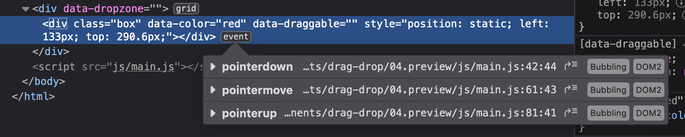

We’ll add the preview to the DOM. We can add it before or after the original element. In this case, I chose to add it before.
draggable.addEventListener('pointerdown', event => {
// ...
// Adds preview before target element
target.before(preview)
// ...
})
Remember to add a polyfill since Safari doesn’t support before. The following is an official polyfill from MDN. It uses insertBefore to provide support for before.
// Element.before polyfill
// https://developer.mozilla.org/en-US/docs/Web/API/ChildNode/before
;(function (arr) {
arr.forEach(function (item) {
if (item.hasOwnProperty('before')) return
Object.defineProperty(item, 'before', {
configurable: true,
enumerable: true,
writable: true,
value: function before () {
var argArr = Array.prototype.slice.call(arguments)
var docFrag = document.createDocumentFragment()
argArr.forEach(function (argItem) {
var isNode = argItem instanceof Node
docFrag.appendChild(isNode ? argItem : document.createTextNode(String(argItem)))
})
this.parentNode.insertBefore(docFrag, this)
}
})
})
})([Element.prototype, CharacterData.prototype, DocumentType.prototype])
We can remove the target element from the DOM since we created a preview element.
Note: Make sure you only remove the target element after you added the preview element to the DOM.
Right now, we append the preview element into the dropzone every time a pointermove event happens (assuming the user is dragging the original element over the dropzone).
But we don’t need to do anything anymore if the preview element is already in the dropzone. We can eliminate this extra work with a few more lines of code.
target.addEventListener('pointermove', event => {
// ...
const hitTest = document.elementFromPoint(left, top)
const dropzone = hitTest.closest('[data-dropzone]')
if (dropzone) {
// Append preview element only if it doesn't exist in the dropzone
const previewExists = [...dropzone.children].find(element => {
return element === preview
})
if (!previewExists) {
dropzone.append(preview)
}
}
})
Try dragging the dropped target one more time. You’ll notice two problems:
When you mouse over the target, another .preview element appears in the dropzone.
When you drag the target, it moves twice as fast.
Both problems happened because we did not remove the pointermove and pointerup event listeners when we dropped the original element.
You can see proof that of these events remaining in the original element with Firefox’s devtools:

We need to remove the pointermove and pointerup event listeners when we drop the original element.
To do this, we must create a named callback function for both pointermove and pointerup.
draggable.addEventListener('pointerdown', event => {
target.addEventListener('pointermove', move)
target.addEventListener('pointerup', up)
function move (event) {
// Move the callback in pointermove event here
}
function up (event) {
// Move the callback in pointerup event here
}
})
Then, we remove both event listeners in up.
function up (event) {
target.removeEventListener('pointermove', move)
target.removeEventListener('pointerup', up)
// ...
}
Fixing Firefox
When you try to drag the element again on Firefox, the entire component turns into an image and you drag that image…
It looks like Firefox selects text as you dragged the element for the first time. (The blue selection background on “Drop Zone” gives us a hint that this is happening).
When you try and drag it the second time, Firefox behaves as if you’re trying to drag this “text” (even though the Text includes other elements).
We can fix this by preventing the default selection behaviour with event.preventDefault. You can only prevent this behaviour during pointerdown.
When you try to drag the boxes on an Android phone you’ll notice it’s glitching out. This is due to Androids Chrome based browsers not adhering to the CSS property touch-action: none;. We can fix this by setting a touch action event listener to our draggables and prevent the default behaviour.